대기환경산업기사 (2014-03-02 기출문제)
1과목: 대기오염개론
1. 확산계수 Ky=Kz=0.11, 풍속 U=15m/sec, 굴뚝의 유효고는 100m, 오염물질의 배출율 Q=30000Sm3/h이고, 가스 중 황산화물 농도가 1500ppm이라고 할 때, 지상에 나타나는 황산화물의 최대 지표농도는 몇 ppm 인가? (단, Sutton의 확산식을 이용한다.)
- 약 0.01
- 약 0.02
- 약 0.03
- 약 0.04
(정답률: 72%)

2. 황화합물에 관한 설명으로 옳지 않은 것은?
- 황화합물은 산화상태가 클수록 증기압은 커지고, 용해성은 감소한다.
- 해양을 통해 자연적 발생원 중 아주 많은 양의 황화합물이 DMS[(CH3)2S]형태로 배출된다.
- 대기 중 유입된 SO2는 입자상 물질의 표면이나 물방울에 흡착된 후 비균질반응에 의해 대부분 황산염(SO42-)으로 산화되어 제거된다.
- 카르보닐황(OCS)은 대류권에서 매우 안정하기 때문에 거의 화학적인 반응을 하지 않는다.
(정답률: 73%)
3. 다음 대기분산모델 중 벨기에에서 개발되었으며, 통계모델로서 도시지역의 오존농도를 계산하는데 이용했던 것은?
- ADMS(atmospheric dispersion ozone model system)
- OCD(offshore and coastal ozone dispersion medel)
- SMOGSTOP(statistical models of groundlevel short term ozone pollution)
- RAMS(regional atmospheric ozone model system)
(정답률: 83%)
4. 냄새물질의 특성에 관한 설명으로 옳지 않은 것은?
- 화학물질이 냄새물질로 되기 위한 조건으로 친유성기와 친수성기의 양기를 가져야 한다.
- 냄새물질이 비교적 저분자인 것은 휘발성이 높은 것을 의미한다.
- 냄새물질의 골격이 되는 탄소 수는 고분자일수록 관능기 특유의 냄새가 강하고 자극적이며 20∼25에서 가장 향기가 강하다.
- 분자내 수산기의 수는 1개 일 때 가장 강하고 그 수가 증가하면 약해져서 무취에 이른다.
(정답률: 80%)
5. 오염원 영향평가 방법 중 분산모델에 관한 설명으로 옳지 않은 것은?
- 점, 선, 면 오염원의 영향을 평가할 수 있다.
- 2차 오염원의 확인이 가능하다.
- 새로운 오염원이 지역 내에 신설될 때 매번 재평가하여야 한다.
- 지형 및 오염원의 조업조건에 영향을 받지 않는다.
(정답률: 84%)
6. 각 오염물질이 식물에 미치는 영향에 관한 설명으로 가장 거리가 먼 것은?
- 불화수소는 어린 잎에 현저하며 지표식물로는 글라디올러스, 메밀 등이 있다.
- 일산화탄소의 중독증상으로 엽록체를 파괴시키고, 잎 전체를 갈변시키며, 토마토, 해바라기, 메밀 등은 25ppm 정도에서 1시간 접촉시 현저한 피해증상을 보인다.
- 에틸렌은 이상낙엽, 새 나무 가지의 성장저해 및 성장억제를 일으킨다.
- 황화수소는 일반적으로 독성은 약하나 어린 잎과 새싹에 피해가 많은 편이며, 지표식물로는 코스모스, 크로바등이 있다.
(정답률: 76%)
7. 최대혼합고(MMD)에 관한 설명으로 옳지 않은 것은?
- 오후 2시를 전후로 해서 일중 최대치를 나타낸다.
- 실제 최대혼합고는 지표위 수 km까지의 실제 공기의 온도종단도를 작성함으로써 결정된다.
- 과단열감률이 생기면 반드시 대류현상이 있게 되고, 이때 내류가 이루어지는 최대고도를 최대혼합고라 한다.
- 최대혼합고가 높으면 높을수록 오염물질이 넓게 퍼져서 더 많은 피해를 입힌다.
(정답률: 75%)
8. 코리올리힘(C, 전향력)의 크기를 옳게 나타낸 것은? (단, Ω : 지구자전 각속도, θ : 위도, U : 물체의 속도)
- 2ΩcosθU
- 2ΩsinθU
- 2ΩtanθU
- 2ΩcotanθU
(정답률: 89%)
9. 다음은 어떤 오염물질에 관한 설명인가?
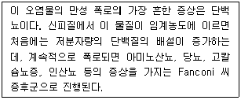
- As
- Hg
- Cr
- Cd
(정답률: 76%)
10. 파장 5,320Å인 빛 속에서 밀도가 0.95g/cm3, 직경 0.42μm인 기름방울의 분산면적비가 4.5일 때 먼지 농도가 0.4mg/m3이라면, 가시거리는 약 몇 km인가? (단, V=[(5.2×ρ×r)/(K×C)] 식 적용)
- 0.33 km
- 0.38 km
- 0.58 km
- 0.82 km
(정답률: 63%)
11. 다음 광화학 스모그(photochemical smog)에 대한 설명으로 옳은 것은?
- 태양광선 중 주로 적외선에 의해 강한 광화학 반응을 일으켜 광화학 스모그를 생성한다.
- 대기 중의 PBN(peroxybutyl nitrate)의 농도는 PAN과 비슷하며, PPN(peroxypropionyl nitrate)은 PAN의 약 2배 정도이다.
- 과산화기가 산소와 반응하여 오존이 생성될 수도 있다.
- PAN은 안정한 화합물이므로 광화학반응에 의해 분해되지 않는다.
(정답률: 59%)
12. A공장에서 배출되는 아황산가스의 농도가 500ppm이고, 시간당 배출가스량이 80m3이라면 하루에 총 배출되는 아황산가스량(kg/day)은? (단, 표준상태 기준 및 24시간 연속가동)
- 1.26
- 2.74
- 3.77
- 4.52
(정답률: 78%)
13. 대기압력이 870mb인 높이에서의 온도가 17℃이었다. 온위(potential temperature, K)는 얼마인가?
- 267.54
- 280.15
- 301.87
- 311.62
(정답률: 76%)
14. 다음 물질 중 보통 자동차 운행 때와 비교하여 감속할 경우 특징적으로 가장 크게 증가하는 것은?
- NOx
- CO2
- H2O
- HC
(정답률: 89%)
15. 굴뚝의 현재 유효고가 55m일 때, 최대 지표농도를 절반으로 감소시키기 위해서는 유효고도(m)를 얼마만큼 더 증가시켜야 하는가? (단, Sutton식을 적용하고, 기타 조건은 동일하다고 가정)
- 77.8m
- 32.0m
- 22.8m
- 11.4m
(정답률: 59%)
16. 다음 대기분산모델 중 미국에서 개발되었으며 바람장모델로 주로 바람장을 계산, 기상예측에 사용된 것은?
- ADMS
- AUSPLUME
- MM5
- SMOGSTOP
(정답률: 77%)
17. 다음 중 광화학 반응에 의해 생성된 2차 오염물질로만 연결된 것은?
- SO3 - NH3
- H2O2 - O3
- NO2 - HCl
- NaCl - SO3
(정답률: 85%)
18. SO2의 착지 농도를 감소시키기 위한 방법으로 옳지 않은 것은?
- 배출가스 온도를 가능한 한 낮춘다.
- 굴뚝 배출가스의 배출속도를 높인다.
- 저유황유를 사용한다.
- 글뚝 높이를 높게 한다.
(정답률: 62%)
19. 연기형태에 관한 설명으로 옳지 않은 것은?
- Lofting 형은 주로 고기압 지역에서 하늘이 맑고 바람이 약한 경우에 초저녁으로부터 아침에 걸쳐 발생하기 쉽다.
- Coning 형은 대기가 중립조건 일 때 발생하며, 이 연기 내에서는 오염의 단면분포가 전형적인 가우시안 분포를 이루고 있다.
- Fumigation 형은 보통 고기압 지역에서 상공이 침강역전층이 있고, 지표 부근에 복사역전이 있는 경우 영역 전층 사이에서 오염물질이 배출될 때 발생한다.
- Looping 형은 맑은 날 오후에 발생하기 쉽고, 풍속이 매우 강하여 상하층간에 혼합이 크게 일어날 때 발생하게 된다.
(정답률: 77%)
20. 대기의 연직구조에 대한 설명으로 거리가 먼 것은?
- 대류권은 보통 저위도 지방이 고위도 지방에 비하여 높다.
- 대류권은 지표에서부터 약 11km 까지의 높이로서 구름이 끼고 비가 오는 등의 기상현상은 대류권에 국한되어 나타난다.
- 기상요소의 수평분포는 위도, 해륙분포 등에 의하며 지역에 따라 다르게 나타나지만 연직방향에 따른 변화가 더욱 크다.
- 성층권의 고도는 약 11km에서 50km 까지이고, 이 권역에서는 고도에 따라 온도가 증가하고, 하층부의 밀도가 작아서 불안정한 상태를 나타낸다.
(정답률: 66%)
2과목: 대기오염 공정시험 기준(방법)
21. 휘발성 유기화합물질(VOC) 누출확인방법에 사용되는 측정기기의 규격, 성능기준 요구사항으로 거리가 먼 것은?
- 기기의 응답시간은 30초보다 작거나 같아야 한다.
- 교정정밀도는 교정용 가스값의 10%보다 작거나 같아야 한다.
- 기기의 계기눈금은 최소한 표시된 누출농도의 10%를 읽을 수 있어야 한다.
- 기기의 퍼프를 내장하고 있어야 하고 일반적으로 시료 유량은 0.5∼3 L/min이다.
(정답률: 63%)
22. 공사장에서 발생되는 비산먼지를 고용량 공기포집기를 이용하여 측정하고자 한다. 이 때 측정을 위한 대조지점이 1개소 일 때 원칙적으로 농도가 가장 높을 것으로 예상되는 측정지점 몇 개소 이상을 선정하여야 하는가?
- 1개소 이상
- 2개소 이상
- 3개소 이상
- 5개소 이상
(정답률: 84%)
23. 굴뚝 배출가스 내의 염화비닐을 채취한 흡착관에 흡착된 염화비닐을 추출한 후 이 추출액 중 일정량을 가스크로마토그래프에 주입하여 분석할 경우 사용하는 용매는?
- 벤젠(C6H6)
- 이황화탄소(CS2)
- 톨루엔(C6H5CH3)
- 클로로폼(CHCl3)
(정답률: 56%)
24. 다음은 환경대기 중 시료 채취방법에 관한 설명이다. 가장 적합한 것은?
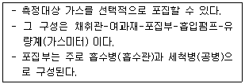
- 용기포집법
- 여지포집법
- 고체포집법
- 용매포집법
(정답률: 80%)
25. 굴뚝 배출가스 내의 질소산화물을 아연환원나프틸에틸렌디아민법으로 분석할 때 사용하는 시료가스의 흡수액은?
- 암모니아수
- 수산화나트륨 용액
- 증류수
- 황산 + 과산화수소수
(정답률: 63%)
26. 굴뚝 배출가스 중 페놀류 분석방법에 과한 설명으로 옳지 않은 것은?
- 흡광광도법에서 시료중의 페놀류를 수산화나트륨용액 (0.4W/V%)에 흡수시켜 포집한다.
- 흡광광도법에서는 염소, 취소 등의 산화성 가스 및 황화수소, 아황산가스 등의 환원성가스가 공존하면 정(正)의 오차를 나타낸다.
- 가스크로마토 그래프법에서는 수소염 이온화검출기(FID)를 구비한 가스크로마토 그래프로 정량해서 페놀류의 농도를 산출한다.
- 흡광광도법에서는 규정시약을 순서대로 가하여 얻은 적색(赤色)액을 510nm의 가시부에서 흡광도를 측정하여 페놀류의 농도를 산출한다.
(정답률: 52%)
27. 굴뚝 배출가스 중의 산소를 자동으로 측정하는 방법으로 원리면에서 자기식과 전기화학식으로 분류할 수 있다. 다음 중 전기화학식 방식에 해당하지 않는 것은?
- 정전위전해형
- 담벨형
- 폴라로그래프형
- 갈바니전지형
(정답률: 80%)
28. 환경대기 중의 아황산가스 농도를 측정하기 위한 시험법으로서 주시험방법만으로 연결된 것은?
- 파라로자닐린법(수동) - 용액전도율법(자동)
- 산정량 수동법(수동) - 불꽃광도법(자동)
- 파라로자닐린법(수동) - 자외선형광법(자동)
- 산정량 반자동법(반자동) - 흡광차분광법(자동)
(정답률: 79%)
29. 원형 굴뚝 단면의 반경이 2.2m 인 경우 측정점수는?
- 8
- 12
- 16
- 20
(정답률: 82%)
30. 환경대기 중의 탄화수소 농도를 자동연속(수소염이온화 검출기법)으로 측정하는 방법과 가장 거리가 먼 것은?
- 총탄화수소 측정법
- 비메탄 탄화수소 측정법
- 광산란 탄화수소 측정법
- 활성 탄화수소 측정법
(정답률: 72%)
31. 아황산가스(SO2) 25.6g을 포함하는 2L용액의 몰농도(M)는?
- 0.01M
- 0.02M
- 0.1M
- 0.2M
(정답률: 73%)
32. 환경대기 중의 시료채취를 위한 하이볼륨에어샘플러법의 장치구성에 관한 설명으로 옳은 것은?
- 유량측정부 : 공기흡인부에 붙어있고, 장착 및 탈착이 쉬운 부자식 유량계를 사용
- 공기흡인부 : 무부하일 때 흡인유량이 약 0.2m3/분 이고, 48시간 이상 연속측정 가능
- 여과지홀더 : 구성요소 중 팩킹은 연성플라스틱으로 만들어진 것으로 크기는 프레임보다 커야함
- 포집용 여과지 : 0.1um 되는 입자를 99%이상 포집할 수 있으며 압력손실이 적고 흡수성이 좋아야 하며, 네오프렌수지가 사용됨
(정답률: 47%)
33. 굴뚝 배기가스 중 금속화합물을 자외선/가시선 분광법으로 분석할 때 다음 중 측정하는 흡광도의 파장값(nm)이 가장 큰 금속화합물은?
- 아연
- 수은
- 구리
- 니켈
(정답률: 71%)
34. 굴뚝 내를 흐르는 배출가스 평균유속을 피토우관으로 동압을 측정하여 개산한 결과 12.8m/s였다. 이때 측정된 동압은? (단, 피토우관 계수는 1.0이며, 굴뚝 내의 습한 배출가스의 밀도는 1.2 kg/m3)
- 8 mmH2O
- 10 mmH2O
- 12 mmH2O
- 14 mmH2O
(정답률: 70%)
35. 굴뚝 배출가스 중 벤젠 분석방법으로 가스크로마토 그래프법을 적용할 때 분석방법과 거리가 먼 것은?(오류 신고가 접수된 문제입니다. 반드시 정답과 해설을 확인하시기 바랍니다.)
- 고체흡착열탈착법
- 고체흡착용매추출법
- 테들라 백-열탈착법
- 테들라 백-용매추출법
(정답률: 55%)
36. 굴뚝 배출가스 중 알데히드 및 케톤화합물(카르보닐화합물)의 분석방법으로 옳지 않은 것은?
- 액체크로마토그래프법으로 분석 시 하이드라존은 특히 650∼680 nm에서 최대 흡광치를 나타낸다.
- 액체크로마토그래프법에서 배출가스 중의 알데히드류는 흡수액 2.4-DNPH(Dinitrophenylhydrazine)과 반응하여 하이드라존 유도체를 생성하고 이를 분석한다.
- 아세틸 아세톤법은 황색 발색액의 흡광도를 측정한다.
- 아세틸 아세톤법은 아황산가스 공존 시 영향을 받으므로 흡수발색액에 염화제이수은과 염화나트륨을 넣는다.
(정답률: 65%)
37. 원자흡광광도법에서 사용되는 가연성 가스와 조연성가스의 조합으로 옳지 않은 것은?
- 수소 - 공기
- 아세틸렌 - 공기
- 아세틸렌 - 아산화질소
- 헬륨 - 산소
(정답률: 70%)
38. 흡광광도법에 이용되는 램버이트 비어(Lambert-Beer)의 법칙을 옳게 나타낸 식은? (단, Io : 입사광 강도, It : 투사광 강도, c : 농도, ℓ: 빛의 투사거리, ε : 흡광계수)
- Io = It · 10-εcℓ
- Io = It · 100-εcℓ
- It = Io · 10-εcℓ
- It = Io · 100-εcℓ
(정답률: 82%)
39. 분석대상가스가 이황화탄소(CS2)인 경우 다음 보기에서 사용되는 채취관, 도관의 재질로 가장 적합한 것은?
- 보통강철
- 석영
- 염화비닐수지
- 네오프렌
(정답률: 69%)
40. 배출가스 중 금속화합물을 유도결합플라스마 원자발광분광법(Inductively Coupled Plasma-Atomic Emission Spectrometry)으로 분석하기 위한 시료 성상에 따른 전처리 방법으로 가장 거리가 먼 것은?
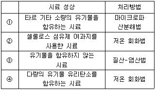
- ①
- ②
- ③
- ④
(정답률: 69%)
3과목: 대기오염방지기술
41. 아래 표는 전기로에 부설된 Bag filter의 유입구 유출구의 가스량과 먼지농도를 측정한 것이다. 먼지통과율을 구하면?
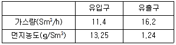
- 3.32%
- 6.65%
- 10.3%
- 13.3%
(정답률: 71%)
42. 탄소, 수소의 중량조성이 각각 90%, 10%인 액체연료가 매시 20kg 연소되고, 공기비는 1.2라면 매시 필요한 공기량(Sm3/hr)은?
- 약 215
- 약 256
- 약 278
- 약 292
(정답률: 66%)
43. 송풍기의 유효정압(Ps)을 나타내는 식으로 옳은 것은? (단, Psi : 입구정압, Pso : 출구정압, Pvi : 동압)
- Ps = Psi + Pso - Pvi
- Ps = Psi – Pso - Pvi
- Ps = Psi – Pso + Pvi
- Ps = Psi + Pso + Pvi
(정답률: 76%)
44. 다음 유해가스 처리법 중 염화수소 제거에 가장 적합한 것은?
- 흡착법
- 수세흡수법
- 연소법
- 촉매연소법
(정답률: 55%)
45. 원형 덕트에서 길이 L, 마찰계수 f, 직경 D, 유속
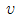
일 때 압력손실(Hf)의 비례관계 표현으로 옳은 것은? (단, g : 중력가속도)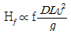
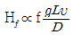
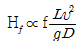
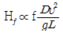
(정답률: 68%)
46. 액체연료의 버너 중 그 유량의 조절 범위가 가장 큰 것은?
- 유압식 버너
- 회전식 버너
- 로터리식 버너
- 고압공기식 버너
(정답률: 57%)
47. 전형적인 자동차 배기가스를 구성하는 다음 물질 중 가장 많은 양(부피%)을 차지하고 있는 것은? (단, 공전상태 기준)
- HC
- CO
- NOX
- SOX
(정답률: 72%)
48. 송풍관(duct)에서 흄(fume) 및 매우 가벼운 건조 먼지(예: 나무 등의 미세한 먼지와 산화아연, 산화알루미늄 등의 흄)의 반응속도로 가장 적합한 것은?
- 2 m/s
- 10 m/s
- 25 m/s
- 50 m/s
(정답률: 69%)
49. 연료 중 탄수소비(C/H비)에 관한 설명으로 옳지 않은 것은?
- 액체연료의 경우 중유 ＞ 경유 ＞ 등유 ＞ 휘발유 순이다.
- C/H비가 작을수록 비점이 높은 연료는 매연이 발생되기 쉽다.
- C/H비는 공기량, 발열량 등에 큰 영향을 미친다.
- C/H비가 클수록 휘도는 높다.
(정답률: 67%)
50. 원추하부 지름이 20cm인 cyclone에서 가스접선 속도가 5m/sec이면 분리계수는?
- 25.5
- 18.5
- 12.8
- 9.7
(정답률: 48%)
51. 황성분이 1.6%인 벙커C유를 매시 1000kg이 완전연소할 때 이론적으로 생성되는 SO2의 량은? (단, 벙커C유의 황성분은 전부 SO2로 된다.)
- 45.0 Sm3/hr
- 32.4 Sm3/hr
- 22.4 Sm3/hr
- 11.2 Sm3/hr
(정답률: 53%)
52. 다음 유압식 Burner의 특징으로 옳은 것은?
- 분무각도는 40∼90° 정도이다.
- 유량조절범위는 1 : 10 정도이다.
- 소형가열로의 열처리용으로 주로 쓰이며, 유압은 1∼2kg/cm2 정도이다.
- 연소용량은 2∼5L/h 정도이다.
(정답률: 69%)
53. 니트로글리세린과 같은 물질의 연소형태로써 공기 중의 산소 공급 없이 연소하는 것은?
- 자기연소
- 분해연소
- 증발연소
- 표면연소
(정답률: 87%)
54. 다음 중 전기집진장치에서 입자에 작용하는 전기력의 종류로 가장 거리가 먼 것은?
- 대전입자의 하전에 의한 쿨롱력
- 전계강도에 의한 힘
- 브라운 운동에 의한 확산력
- 전기풍에 의한 힘
(정답률: 73%)
55. A집진장치의 입구농도 6000mg/m3, 입구 유입가스량 10m3이며, 출구농도 0.3g/m3, 출구 배출가스량이 11m3 일 때, 이 집진장치의 효율은?
- 94.5 %
- 93.7 %
- 92.4 %
- 91.7 %
(정답률: 65%)
56. 다음 중 석탄의 탄화도 증가에 따라 증가하지 않는 것은?
- 고정탄소
- 비열
- 발열량
- 착화온도
(정답률: 72%)
57. 다음은 중질유의 탈황방법이다. ( )안에 가장 적합한 것은?
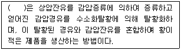
- 직접탈황법
- 간접탈황법
- 중간탈황법
- 다단탈황법
(정답률: 68%)
58. 필요한 총 여과면적이 371m2 일 때 직경 10cm, 길이 5m인 여과백을 사용하면 몇 개의 여과백이 소요되는가?
- 26
- 48
- 237
- 474
(정답률: 65%)
59. 다음 흡수장치 중 가스분산형 흡수장치에 해당하는 것은?
- 벤츄리 스크러버
- 기포탑
- 젖은 벽탑
- 분무탑
(정답률: 67%)
60. 배가스 탈질기술 중 습식법에 관한 설명으로 가장 거리가 먼 것은?
- 배가스 중에 있는 먼지의 영향이 적고 SO2와 동시에 제거 할 수 있다.
- 질산염 등의 부산물 생성이 적어 2차 처리가 불필요하다.
- 고가의 산화제 및 환원제가 다량 소모된다.
- 흡수산화법은 NOx제거에 KMnO4, H2O2나 NaClO2등과 같은 산화제를 포함하는 흡수액에 흡수시켜 산화제거한다.
(정답률: 62%)
4과목: 대기환경 관계 법규
61. 대기환경보전법령상 청정연료를 사용하여야 하는 대상시설의 범위기준으로 옳지 않은 것은?
- 「건축법 시행령」에 따른 공동주택으로서 동일한 보일러를 이용하여 하나의 단지 또는 여러 개의 단지가 공동으로 열을 이용하는 중앙집중난방방식(지역냉난방 방식을 포함한다)으로 열을 공급받고, 단지 내의 모든 세대의 평균 전용면적이 40.0m2를 초과하는 공동주택
- 「집단에너지사업법 시행령」에 따른 지역냉난방사업을 위한 시설
- 전체 보일러의 시간당 총 증발량이 0.1톤 이상인 업무용 보일러(영업용 및 산업용보일러를 포함하되, 공공용보일러는 제외한다.)
- 발전시설. 다만, 산업용 열병합 발전시설은 제외한다.
(정답률: 55%)
62. 대기환경보전법상 배출허용기준 준수 확인여부 등을 위한 관계공무원의 출입ㆍ검사를 거부ㆍ방해 또는 기피한 자에 대한 벌칙기준은?
- 3년 이하의 징역이나 천만원 이하의 벌금을 처한다.
- 1년 이하의 징역이나 500만원 이하의 벌금을 처한다.
- 6개월 이하의 징역이나 300만원 이하의 벌금에 처한다.
- 300만원 이하의 벌금에 처한다.
(정답률: 48%)
63. 대기환경보전법령상 대기오염물질발생량의 합계에 따른 사업장 종별 구분 시 다음 중 “3종 사업장” 기준은?
- 대기오염물질발생량의 합계가 연간 20톤 이상 80톤 미만인 사업장
- 대기오염물질발생량의 합계가 연간 20톤 이상 50톤 미만인 사업장
- 대기오염물질발생량의 합게가 연간 10톤 이상 20톤 미만인 사업장
- 대기오염물질발생량의 합계가 연간 2톤 이상 10톤 미만인 사업장
(정답률: 81%)
64. 대기환경보전법상 환경부장관은 대기오염물질과 온실가스를 줄여 대기환경을 개선하기 위하여 대기환경개선 종합계획을 수립하여야 한다. 이 종합계획에 포함되어야 할 사항으로 거리가 먼 것은? (단, 그 밖의 사항 등은 고려하지 않음)
- 온실가스 배출량 명세서
- 대기오염물질의 배출현황 및 전망
- 기후변화로 인한 영향평가와 적응대책에 관한 사항
- 기후변화 관련 국제적 조화와 협력에 관한 사항
(정답률: 59%)
65. 대기환경보전법규상 점검기관에서 배출허용기준 준수여부를 확인하기 위하여 대기오염도 검사를 검사기관에 지시한다. 다음 중 대기오염도 검사기관으로 볼 수 없는 기관은?
- 한국환경공단
- 환경보전협회
- 경상북도 보건환경연구원
- 수도권 대기환경청
(정답률: 84%)
66. 대기환경보전법령상 일일초과배출량 및 일일유량의 산정방법으로 옳은 것은?
- 일일조업시간은 배출량을 측정하기 전 최근 조업한 30일 동안의 배출시설 조업시간 평균치를 시간으로 표시한다.
- 먼지의 배출농도의 단위는 세제곱미터당 마이크로그램으로 표시한다.
- 특정대기유해물질의 배출허용기준초과 일일오염물질배출량은 소수점 이하 첫째자리까지 계산한다.
- 먼지의 배출허용기준초과 일일오염물질배출량은 일일유량×배출허용기준초과농도×10-3 으로 산정한다.
(정답률: 58%)
67. 대기환경보전법규상 대기환경규제지역의 지정대상지역 기준으로 옳은 것은?(단, 대기오염도는 대기환경보전법에 따른 상시측정을 하지 아니하는 지역 중 법에 따라 조사된 대기오염물질 배출량을 기초로 산정한 대기오염도를 기준으로 함)
- 대기오염도가 환경기준의 80퍼센트 이상인 지역
- 대기오염도가 환경기준의 70퍼센트 이상인 지역
- 대기오염도가 환경기준의 60퍼센트 이상인 지역
- 대기오염도가 환경기준의 50퍼센트 이상인 지역
(정답률: 68%)
68. 대기환경보전법규상 조업정지처분을 갈음하여 과징금을 부과할 때, 조업장지일수에 1일당 부과금액과 사업장 규모별 부과계수를 곱하여 산정한다. 다음 중 4종 사업장의 부과계수는?
- 0.7
- 0.5
- 0.3
- 0.1
(정답률: 56%)
69. 대기환경보전법규상 수도권대기환경청장, 국립환경과학원장 또는 한국환경공단이 설치하는 대기오염 측정망의 종류에 해당하지 않는 것은?
- 기후ㆍ생태계변화 유발물질의 농도를 측정하기 위한 지구대기측정망
- 도시지역의 휘발성유기화합물 등의 농도를 측정하기 위한 광화학대기오염물질측정망
- 대기 중의 중금속 농도를 측정하기 위한 대기중금속측정망
- 대기오염물질의 지역배경농도를 측정하기 위한 교외 대기측정망
(정답률: 71%)
70. 대기환경보전법규상 운행차배출허용기준 중 일반기준에 관한 사항으로 옳지 않은 것은?
- 1993년 이후에 제작된 자동차 중 과급기(Turbo charger)나 중간냉각기(Intercooler)를 부착한 경유사용 자동차의 배출허용기준은 무부하급가속 검사방법의 매연 항목에 대한 배출허용기준에 5%를 더한 농도를 적용한다.
- 휘발유사용 자동차는 휘발유 및 가스(천연가스는 제외한다)를 섞어서 사용하는 자동차를 포함하며, 경유사용 자동차는 경유와 알코올(천연가스는 제외한다)을 섞어서 사용하거나 자동차를 포함한다.
- 희박연소(Lean Burn) 방식을 적용하는 자동차는 공기 과잉률 기준을 적용하지 아니한다.
- 알코올만 사용하는 자동차는 탄화수소 기준을 적용하지 아니한다.
(정답률: 64%)
71. 대기환경보전법령상 인증을 면제할 수 있는 자동차와 거리가 먼 것은?
- 군용 및 경호업무용 등 국가의 특수한 공용 목적으로 사용하기 위한 자동차
- 주한 외국군대의 구성원이 공용 목적으로 사용하기 위한 자동차
- 수출용 자동차와 박람회나 그 밖에 이에 준하는 행사에 참가하는 자가 전시의 목적으로 일시 반입하는 자동차
- 국가대표 선수용 자동차 또는 훈련용 자동차로서 문화체육관광부장관의 확인을 받은 자동차
(정답률: 56%)
72. 다음은 대기환경보전법령상 환경기술인의 임명신고 사항에 관한 사항이다. ( )안에 가장 적합한 것은?
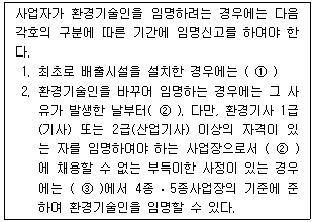
- ① 가동개시 신고를 할 때, ② 5일 이내, ③ 30일의 범위
- ① 가동개시 신고를 할 때, ② 10일 이내, ③ 30일의 범위
- ① 가동개시 신고 후 5일 이내, ② 10일 이내, ③ 60일의 범위
- ① 가동개시 신고 후 5일 이내, ② 15일 이내, ③ 60일의 범위
(정답률: 57%)
73. 대기환경보전법규상 환경부장관은 대기오염상태가 환경기준을 초과하여 주민의 건강 등에 심각한 위해를 끼칠 우려가 있다고 인정되는 구역의 경우 당해구역의 사업장에 대하여 배출되는 오염물질을 총량으로 규제할 수 있는데 이러한 총량규제를 하고자 할 때 고시하여야 하는 사항으로 가장 거리가 먼 것은? (단, 그 밖의 사항 등은 고려하지 않는다.)
- 총량규제구역
- 총량규제 대기오염물질
- 총량규제기간 및 총량규제방법
- 대기오염물질의 저감계획
(정답률: 49%)
74. 대기환경보전법규상 자동차연료 중 “천연가스” 각 항목의 제조기준으로 옳지 않은 것은?
- 메탄(부피%) : 88.0 이상
- 에탄(부피%) : 7.0 이하
- 황분(ppm) : 50 이하
- 불활성가스(CO2, N2 등)(부피 %) : 4.5 이하
(정답률: 72%)
75. 대기환경보전법규상 한국환경공단이 환경부장관에게 보고해야 할 위탁업무 보고사항 중 “자동차배출가스 인증생략 현황”의 ① 보고횟수 및 ② 보고기일 기준은?
- ① 연 1회, ② 다음 해 1월 15일까지
- ① 연 2회, ② 매 반기 종료 후 15일 이내
- ① 연 4회, ② 매 분기 종료 후 15일 이내
- ① 수시, ② 해당사항 발생 후 15일 이내
(정답률: 74%)
76. 대기환경보전법규상 자동차연료 제조기준 중 휘발유의 황함량 제조기준(ppm)은?
- 2.3 이하
- 10 이하
- 50 이하
- 60 이하
(정답률: 83%)
77. 대기환경보전법규상 가스를 연료로 사용하는 경자동차의 배출가스 보증기간 적용기준으로 옳은 것은? (단, 2013년 1월 1일 이후 제작자동차)
- 2년 또는 10,000km
- 2년 또는 160,000km
- 6년 또는 100,000km
- 10년 또는 192,000km
(정답률: 47%)
78. 대기환경보전법규상 자동차운행정지를 받은 자동차를 운행정지기간 중에 운행하는 경우 물게 되는 벌금기준은?
- 100만원 이하의 벌금
- 200만원 이하의 벌금
- 300만원 이하의 벌금
- 500만원 이하의 벌금
(정답률: 66%)
79. 대기환경보전법령상 특별대책지역 또는 대기환경규제지역안에서 “휘발성유기화합물”을 배출하는 시설로서 대통령령이 정하는 시설에 해당하지 않는 것은? (단, 그 밖의 시설 등은 고려하지 않는다.)
- 석유정제를 위한 제조시설
- 저유소의 저장시설 및 출하시설
- 세탁시설
- 발효시설
(정답률: 68%)
80. 대기환경보전법규상 배출시설과 방지시설의 정상적인 운영ㆍ관리를 위해 환경기술인 업무사항을 준수사항 및 관리사항으로 구분할 때, 다음 중 준수사항에 해당하지 않는 것은?
- 자가측정은 정확히 할 것
- 배출시설 및 방지시설의 운영기록을 사실에 기초하여 작성할 것
- 배출시설 및 방지시설의 관리 및 개선에 관한 계획을 수립할 것
- 자가측정 시에 사용한 여과지는 환경분야 시험ㆍ검사등에 관한 법률에 따른 환경오염공정시험기준에 따라 기록한 시료채취기록지와 함께 날짜별로 보관·관리할 것
(정답률: 72%)
따라서, 주어진 값들을 대입하면 Cx = 30000/(2π×0.11×15×100)exp(-y2/4×0.11×15×100)이다. 여기서, y=0일 때 최대 지표농도를 구하면 된다.
따라서, Cx = 30000/(2π×0.11×15×100)exp(0) = 약 0.02 이다.
즉, 지상에서 나타나는 황산화물의 최대 지표농도는 약 0.02ppm이다.